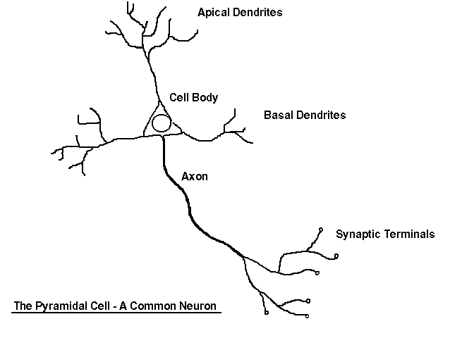

The Neuron | The Nerve Message | Nervous Systems | Peripheral Nervous System
Somatic Nervous System | Autonomic Nervous System | Central Nervous System
The Brain | The Spinal Cord | The Brain and Drugs | Senses | Links
Nervous tissue is composed of two main cell types: neurons and glial cells. Neurons transmit nerve messages. Glial cells are in direct contact with neurons and often surround them.
Nerve Cells and Astrocyte (SEM x2,250). This image is copyright Dennis Kunkel at www.DennisKunkel.com, used with permission.
The neuron is the functional unit of the nervous system. Humans have about 100 billion neurons in their brain alone! While variable in size and shape, all neurons have three parts. Dendrites receive information from another cell and transmit the message to the cell body. The cell body contains the nucleus, mitochondria and other organelles typical of eukaryotic cells. The axon conducts messages away from the cell body.

Structure of a typical neuron. The above image is from http://eleceng.ukc.ac.uk/~sd5/pics/research/big/neuron.gif.
Three types of neurons occur. Sensory neurons typically have a long dendrite and short axon, and carry messages from sensory receptors to the central nervous system. Motor neurons have a long axon and short dendrites and transmit messages from the central nervous system to the muscles (or to glands). Interneurons are found only in the central nervous system where they connect neuron to neuron.
Structure of a neuron and the direction of nerve message transmission. Image from Purves et al., Life: The Science of Biology, 4th Edition, by Sinauer Associates (www.sinauer.com) and WH Freeman (www.whfreeman.com), used with permission.
Some axons are wrapped in a myelin sheath formed from the plasma membranes of specialized glial cells known as Schwann cells. Schwann cells serve as supportive, nutritive, and service facilities for neurons. The gap between Schwann cells is known as the node of Ranvier, and serves as points along the neuron for generating a signal. Signals jumping from node to node travel hundreds of times faster than signals traveling along the surface of the axon. This allows your brain to communicate with your toes in a few thousandths of a second.
Cross section of myelin sheaths that surround axons (TEM x191,175). This image is copyright Dennis Kunkel at www.DennisKunkel.com, used with permission.
Structure of a nerve bundle. Image from Purves et al., Life: The Science of Biology, 4th Edition, by Sinauer Associates (www.sinauer.com) and WH Freeman (www.whfreeman.com), used with permission.
The plasma membrane of neurons, like all other cells, has an unequal distribution of ions and electrical charges between the two sides of the membrane. The outside of the membrane has a positive charge, inside has a negative charge. This charge difference is a resting potential and is measured in millivolts. Passage of ions across the cell membrane passes the electrical charge along the cell. The voltage potential is -65mV (millivolts) of a cell at rest (resting potential). Resting potential results from differences between sodium and potassium positively charged ions and negatively charged ions in the cytoplasm. Sodium ions are more concentrated outside the membrane, while potassium ions are more concentrated inside the membrane. This imbalance is maintained by the active transport of ions to reset the membrane known as the sodium potassium pump. The sodium-potassium pump maintains this unequal concentration by actively transporting ions against their concentration gradients.
Transmission of an action potential. The above image is from http://eleceng.ukc.ac.uk/~sd5/pics/research/big/actpot.gif.
Changed polarity of the membrane, the action potential, results in propagation of the nerve impulse along the membrane. An action potential is a temporary reversal of the electrical potential along the membrane for a few milliseconds. Sodium gates and potassium gates open in the membrane to allow their respective ions to cross. Sodium and potassium ions reverse positions by passing through membrane protein channel gates that can be opened or closed to control ion passage. Sodium crosses first. At the height of the membrane potential reversal, potassium channels open to allow potassium ions to pass to the outside of the membrane. Potassium crosses second, resulting in changed ionic distributions, which must be reset by the continuously running sodium-potassium pump. Eventually enough potassium ions pass to the outside to restore the membrane charges to those of the original resting potential.The cell begins then to pump the ions back to their original sides of the membrane.
The action potential begins at one spot on the membrane, but spreads to adjacent areas of the membrane, propagating the message along the length of the cell membrane. After passage of the action potential, there is a brief period, the refractory period, during which the membrane cannot be stimulated. This prevents the message from being transmitted backward along the membrane.
The junction between a nerve cell and another cell is called a synapse. Messages travel within the neuron as an electrical action potential. The space between two cells is known as the synaptic cleft. To cross the synaptic cleft requires the actions of neurotransmitters. Neurotransmitters are stored in small synaptic vessicles clustered at the tip of the axon.
A synapse. Image from Purves et al., Life: The Science of Biology, 4th Edition, by Sinauer Associates (www.sinauer.com) and WH Freeman (www.whfreeman.com), used with permission.
Excitatory Synapse from the Central Nervous System (TEM x27,360). This image is copyright Dennis Kunkel at www.DennisKunkel.com, used with permission.
Arrival of the action potential causes some of the vesicles to move to the end of the axon and discharge their contents into the synaptic cleft. Released neurotransmitters diffuse across the cleft, and bind to receptors on the other cell's membrane, causing ion channels on that cell to open. Some neurotransmitters cause an action potential, others are inhibitory.
Neurotransmitters tend to be small molecules, some are even hormones. The time for neurotransmitter action is between 0,5 and 1 millisecond. Neurotransmitters are either destroyed by specific enzymes in the synaptic cleft, diffuse out of the cleft, or are reabsorbed by the cell. More than 30 organic molecules are thought to act as neurotransmitters. The neurotransmitters cross the cleft, binding to receptor molecules on the next cell, prompting transmission of the message along that cell's membrane. Acetylcholine is an example of a neurotransmitter, as is norepinephrine, although each acts in different responses. Once in the cleft, neurotransmitters are active for only a short time. Enzymes in the cleft inactivate the neurotransmitters. Inactivated neurotransmitters are taken back into the axon and recycled.
Diseases that affect the function of signal transmission can have serious consequences. Parkinson's disease has a deficiency of the neurotransmitter dopamine. Progressive death of brain cells increases this deficit, causing tremors, rigidity and unstable posture. L-dopa is a chemical related to dopamine that eases some of the symptoms (by acting as a substitute neurotransmitter) but cannot reverse the progression of the disease.
The bacterium Clostridium tetani produces a toxin that prevents the release of GABA. GABA is important in control of skeletal muscles. Without this control chemical, regulation of muscle contraction is lost; it can be fatal when it effects the muscles used in breathing.
Clostridium botulinum produces a toxin found in improperly canned foods. This toxin causes the progressive relaxation of muscles, and can be fatal. A wide range of drugs also operate in the synapses: cocaine, LSD, caffeine, and insecticides.
Multicellular animals must monitor and maintain a constant internal environment as well as monitor and respond to an external environment. In many animals, these two functions are coordinated by two integrated and coordinated organ systems: the nervous system and the endocrine system. Click here for a diagram of the Nervous System.
Three basic functions are prformed by nervous systems:
Receptors are parts of the nervous system that sense changes in the internal or external environments. Sensory input can be in many forms, including pressure, taste, sound, light, blood pH, or hormone levels, that are converted to a signal and sent to the brain or spinal cord.
In the sensory centers of the brain or in the spinal cord, the barrage of input is integrated and a response is generated. The response, a motor output, is a signal transmitted to organs than can convert the signal into some form of action, such as movement, changes in heart rate, release of hormones, etc.
Some animals have a second control system, the endocrine system. The nervous system coordinates rapid responses to external stimuli. The endocrine system controls slower, longer lasting responses to internal stimuli. Activity of both systems is integrated.
The nervous system monitors and controls almost every organ system through a series of positive and negative feedback loops.The Central Nervous System (CNS) includes the brain and spinal cord. The Peripheral Nervous System (PNS) connects the CNS to other parts of the body, and is composed of nerves (bundles of neurons).
Not all animals have highly specialized nervous systems. Those with simple systems tend to be either small and very mobile or large and immobile. Large, mobile animals have highly developed nervous systems: the evolution of nervous systems must have been an important adaptation in the evolution of body size and mobility.
Coelenterates, cnidarians, and echinoderms have their neurons organized into a nerve net. These creatures have radial symmetry and lack a head. Although lacking a brain or either nervous system (CNS or PNS) nerve nets are capable of some complex behavior.
Nervous systems in radially symmetrical animals. Image from Purves et al., Life: The Science of Biology, 4th Edition, by Sinauer Associates (www.sinauer.com) and WH Freeman (www.whfreeman.com), used with permission.
Bilaterally symmetrical animals have a body plan that includes a defined head and a tail region. Development of bilateral symmetry is associated with cephalization, the development of a head with the accumulation of sensory organs at the front end of the organism. Flatworms have neurons associated into clusters known as ganglia, which in turn form a small brain. Vertebrates have a spinal cord in addition to a more developed brain.
Some nervous systems in bilaterally symmetrical animals. Image from Purves et al., Life: The Science of Biology, 4th Edition, by Sinauer Associates (www.sinauer.com) and WH Freeman (www.whfreeman.com), used with permission.
Chordates have a dorsal rather than ventral nervous system. Several evolutionary trends occur in chordates: spinal cord, continuation of cephalization in the form of larger and more complex brains, and development of a more elaborate nervous system. The vertebrate nervous system is divided into a number of parts. The central nervous system includes the brain and spinal cord. The peripheral nervous system consists of all body nerves. Motor neuron pathways are of two types: somatic (skeletal) and autonomic (smooth muscle, cardiac muscle, and glands). The autonomic system is subdivided into the sympathetic and parasympathetic systems.
The Peripheral Nervous System (PNS)contains only nerves and connects the brain and spinal cord (CNS) to the rest of the body. The axons and dendrites are surrounded by a white myelin sheath. Cell bodies are in the central nervous system (CNS) or ganglia. Ganglia are collections of nerve cell bodies. Cranial nerves in the PNS take impulses to and from the brain (CNS). Spinal nerves take impulses to and away from the spinal cord. There are two major subdivisions of the PNS motor pathways: the somatic and the autonomic.
Two main components of the PNS:
Most sensory input carried in the PNS remains below the level of conscious awareness. Input that does reach the conscious level contributes to perception of our external environment.
The Somatic Nervous System (SNS) includes all nerves controlling the muscular system and external sensory receptors. External sense organs (including skin) are receptors. Muscle fibers and gland cells are effectors. The reflex arc is an automatic, involuntary reaction to a stimulus. When the doctor taps your knee with the rubber hammer, she/he is testing your reflex (or knee-jerk). The reaction to the stimulus is involuntary, with the CNS being informed but not consciously controlling the response. Examples of reflex arcs include balance, the blinking reflex, and the stretch reflex.
Sensory input from the PNS is processed by the CNS and responses are sent by the PNS from the CNS to the organs of the body.
Motor neurons of the somatic system are distinct from those of the autonomic system. Inhibitory signals, cannot be sent through the motor neurons of the somatic system.
The Autonomic Nervous System is that part of PNS consisting of motor neurons that control internal organs. It has two subsystems. The autonomic system controls muscles in the heart, the smooth muscle in internal organs such as the intestine, bladder, and uterus. The Sympathetic Nervous System is involved in the fight or flight response. The Parasympathetic Nervous System is involved in relaxation. Each of these subsystems operates in the reverse of the other (antagonism). Both systems innervate the same organs and act in opposition to maintain homeostasis. For example: when you are scared the sympathetic system causes your heart to beat faster; the parasympathetic system reverses this effect.
Motor neurons in this system do not reach their targets directly (as do those in the somatic system) but rather connect to a secondary motor neuron which in turn innervates the target organ.
Click here for a diagram of the Autonomic Nervous System.
The Central Nervous System (CNS) is composed of the brain and spinal cord. The CNS is surrounded by bone-skull and vertebrae. Fluid and tissue also insulate the brain and spinal cord.
Areas of the brain. The above image is from http://www.prs.k12.nj.us/schools/PHS/Science_Dept/APBio/pic/brain.gif.
The brain is composed of three parts: the cerebrum (seat of consciousness), the cerebellum, and the medulla oblongata (these latter two are "part of the unconscious brain").
The medulla oblongata is closest to the spinal cord, and is involved with the regulation of heartbeat, breathing, vasoconstriction (blood pressure), and reflex centers for vomiting, coughing, sneezing, swallowing, and hiccuping. The hypothalamus regulates homeostasis. It has regulatory areas for thirst, hunger, body temperature, water balance, and blood pressure, and links the Nervous System to the Endocrine System. The midbrain and pons are also part of the unconscious brain. The thalamus serves as a central relay point for incoming nervous messages.
The cerebellum is the second largest part of the brain, after the cerebrum. It functions for muscle coordination and maintains normal muscle tone and posture. The cerebellum coordinates balance.
The conscious brain includes the cerebral hemispheres, which are are separated by the corpus callosum. In reptiles, birds, and mammals, the cerebrum coordinates sensory data and motor functions. The cerebrum governs intelligence and reasoning, learning and memory. While the cause of memory is not yet definitely known, studies on slugs indicate learning is accompanied by a synapse decrease. Within the cell, learning involves change in gene regulation and increased ability to secrete transmitters.
During embryonic development, the brain first forms as a tube, the anterior end of which enlarges into three hollow swellings that form the brain, and the posterior of which develops into the spinal cord. Some parts of the brain have changed little during vertebrate evolutionary history. Click here to view an diagram of the brain, and here for a clickable map of the brain.
Parts of the brain as seen from the middle of the brain. Image from Purves et al., Life: The Science of Biology, 4th Edition, by Sinauer Associates (www.sinauer.com) and WH Freeman (www.whfreeman.com), used with permission.
Vertebrate evolutionary trends include
The brain stem is the smallest and from an evolutionary viewpoint, the oldest and most primitive part of the brain. The brain stem is continuous with the spinal cord, and is composed of the parts of the hindbrain and midbrain. The medulla oblongata and pons control heart rate, constriction of blood vessels, digestion and respiration.
The midbrain consists of connections between the hindbrain and forebrain. Mammals use this part of the brain only for eye reflexes.
The cerebellum is the third part of the hindbrain, but it is not considered part of the brain stem. Functions of the cerebellum include fine motor coordination and body movement, posture, and balance. This region of the brain is enlarged in birds and controls muscle action needed for flight.
The forebrain consists of the diencephalon and cerebrum. The thalamus and hypothalamus are the parts of the diencephalon. The thalamus acts as a switching center for nerve messages. The hypothalamus is a major homeostatic center having both nervous and endocrine functions.
The cerebrum, the largest part of the human brain, is divided into left and right hemispheres connected to each other by the corpus callosum. The hemispheres are covered by a thin layer of gray matter known as the cerebral cortex, the most recently evolved region of the vertebrate brain. Fish have no cerebral cortex, amphibians and reptiles have only rudiments of this area.
The cortex in each hemisphere of the cerebrum is between 1 and 4 mm thick. Folds divide the cortex into four lobes: occipital, temporal, parietal, and frontal. No region of the brain functions alone, although major functions of various parts of the lobes have been determined.
The major brain areas and lobes. Image from Purves et al., Life: The Science of Biology, 4th Edition, by Sinauer Associates (www.sinauer.com) and WH Freeman (www.whfreeman.com), used with permission.
The occipital lobe (back of the head) receives and processes visual information. The temporal lobe receives auditory signals, processing language and the meaning of words. The parietal lobe is associated with the sensory cortex and processes information about touch, taste, pressure, pain, and heat and cold. The frontal lobe conducts three functions:
Functional areas of the brain. Image from Purves et al., Life: The Science of Biology, 4th Edition, by Sinauer Associates (www.sinauer.com) and WH Freeman (www.whfreeman.com), used with permission.
Most people who have been studied have their language and speech areas on the left hemisphere of their brain. Language comprehension is found in Wernicke's area. Speaking ability is in Broca's area. Damage to Broca's area causes speech impairment but not impairment of language comprehension. Lesions in Wernicke's area impairs ability to comprehend written and spoken words but not speech. The remaining parts of the cortex are associated with higher thought processes, planning, memory, personality and other human activities.
Parts of the cerebral cortex and the relative areas that are devoted to controlling various body regions. Image from Purves et al., Life: The Science of Biology, 4th Edition, by Sinauer Associates (www.sinauer.com) and WH Freeman (www.whfreeman.com), used with permission.
The spinal cord runs along the dorsal side of the body and links the brain to the rest of the body. Vertebrates have their spinal cords encased in a series of (usually) bony vertebrae that comprise the vertebral column.
The gray matter of the spinal cord consists mostly of cell bodies and dendrites. The surrounding white matter is made up of bundles of interneuronal axons (tracts). Some tracts are ascending (carrying messages to the brain), others are descending (carrying messages from the brain). The spinal cord is also involved in reflexes that do not immediately involve the brain.
Some neurotransmitters are excitory, such as acetylcholine, norepinephrine, serotonin, and dopamine. Some are associated with relaxation, such as dopamine and serotonin. Dopamine release seems related to sensations of pleasure. Endorphins are natural opioids that produce elation and reduction of pain, as do artificial chemicals such as opium and heroin. Neurological diseases, for example Parkinson's disease and Huntington's disease, are due to imbalances of neurotransmitters. Parkinson's is due to a dopamine deficiency. Huntington's disease is thought to be cause by malfunctioning of an inhibitory neurotransmitter. Alzheimer's disease is associated with protein plaques in the brain.
Drugs are stimulants or depressants that block or enhance certain neurotransmitters. Dopamine is thought involved with all forms of pleasure. Cocaine interferes with uptake of dopamine from the synaptic cleft. Alcohol causes a euphoric "high" followed by a depression.
Marijuana, material from the Indian hemp plant (Cannabis sativa), has a potent chemical THC (tetrahydracannibinol) that in low, concentrations causes a euphoric high (if inhaled, the most common form of action is smoke inhalation). High dosages may cause severe effects such as hallucinations, anxiety, depression, and psychotic symptoms.
Cocaine is derives from the plant Erthoxylon coca. Inhaled, smoked or injected. Cocaine users report a "rush" of euphoria following use. Following the rush is a short (5-30 minute) period of arousal followed by a depression. Repeated cycle of use terminate in a "crash" when the cocaine is gone. Prolonged used causes production of less dopamine, causing the user to need more of the drug.
Heroin is a derivative of morphine, which in turn is obtained from opium, the milky secretions obtained from the opium poppy, Papaver somniferum. Heroin is usually injected intravenously, although snorting and smoking serve as alternative delivery methods. Heroin binds to ophioid receptors in the brain, where the natural chemical endorphins are involved in the cessation pain. Heroin is physically addictive, and prolonged use causes less endorphin production. Once this happens, the euphoria is no longer felt, only dependence and delay of withdrawal symptoms.
Input to the nervous system is in the form of our five senses: pain, vision, taste, smell, and hearing. Vision, taste, smell, and hearing input are the special senses. Pain, temperature, and pressure are known as somatic senses. Sensory input begins with sensors that react to stimuli in the form of energy that is transmitted into an action potential and sent to the CNS.
Mechanoreceptors vary greatly in the specific type of stimulus and duration of stimulus/action potentials. The most adaptable vertebrate mechanoreceptor is the hair cell. Hair cells are present in the lateral line of fish. In humans and mammals hair cells are involved with detection of sound and gravity and providing balance.
Hearing involves the actions of the external ear, eardrum, ossicles, and cochlea. In hearing, sound waves in air are converted into vibrations of a liquid then into movement of hair cells in the cochlea. Finally they are converted into action potentials in a sensory dendrite connected to the auditory nerve. Very loud sounds can cause violent vibrations in the membrane under hair cells, causing a shearing or permanent distortion to the cells, resulting in permanent hearing loss.
Orientation and gravity are detected at the semicircular canals. Hair cells along three planes respond to shifts of liquid within the cochlea, providing a three-dimensional sense of equilibrium. Calcium carbonate crystals can shift in response to gravity, providing sensory information about gravity and acceleration.
The human eye can detect light in the 400-700 nanometer (nm) range, a small portion of the electromagnetic spectrum, the visible light spectrum. Light with wavelengths shorter than 400 nm is termed ultraviolet (UV) light. Light with wavelengths longer than 700 nm is termed infrared (IR) light.
The electromagnetic spectrum. Image from Purves et al., Life: The Science of Biology, 4th Edition, by Sinauer Associates (www.sinauer.com) and WH Freeman (www.whfreeman.com), used with permission.
In the eye, two types of photoreceptor cells are clustered on the retina, or back portion of the eye. These receptors, rods and cones, apparently evolved from hair cells. Rods detect differences in light intensity; cones detect color. Rods are more common in a circular zone near the edge of the eye. Cones occur in the center (or fovea centralis) of the retina.
Light reaching a photoreceptor causes the breakdown of the chemical rhodopsin, which in turn causes a membrane potential that is transmitted to an action potential. The action potential transfers to synapsed neurons that connect to the optic nerve. The optic nerve connects to the occipital lobe of the brain.
Humans have three types of cones, each sensitive to a different color of light: red, blue and green. Opsins are chemicals that bind to cone cells and make those cells sensitive to light of a particular wavelength (or color). Humans have three different form of opsins coded for by three genes on the X chromosome. Defects in one or more of these opsin genes can cause color blindness, usually in males.
Back to Table of Contents | THE ENDOCRINE SYSTEM
Email: mj.farabee@emcmail.maricopa.edu
Last modified:
The URL of this page is:
{kind=link}
{kind=link}
{kind=link}